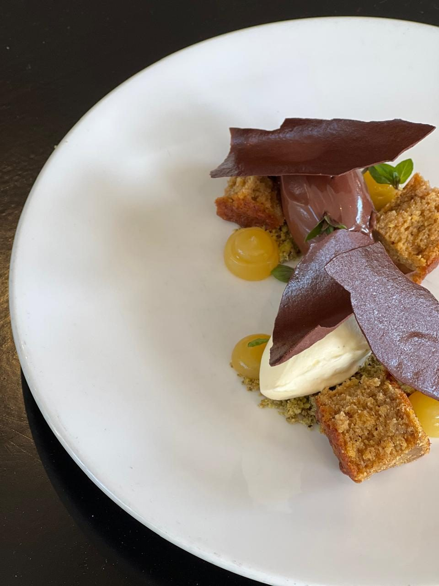

Le Cordon Bleu–trained pastry chef crafting fine dining desserts, chocolate showpieces and celebration cakes — where classical French technique meets a contemporary palate.
Seven years across fine dining rooms, patisserie benches and new openings — from Manipal to Melbourne.
I lead the pastry section at Maha, Melbourne, running production and service for a fine dining room: plated desserts, seasonal menu development, and the training of junior pastry chefs and apprentices.
Before Maha, three years at Pure South Dining shaped my approach — desserts built from the seasonal availability of Australian produce, breads baked in-house daily, and a section run with precision under high-volume service. My foundation is classical French patisserie, formalised at Le Cordon Bleu Melbourne; my instinct is contemporary flavour — fermentation, native ingredients, restraint on the plate.
The next chapter is leadership: senior pastry roles where menu direction, costing, and mentorship sit together — and a portfolio of signature plated desserts that carry my name.

II
Service History
Feb 2025 — Present
Chef de Partie, Pastry — Maha, Melbourne
Running pastry production and service for the fine dining room. Seasonal dessert development, high-volume consistency, mise en place and ordering, training junior pastry staff and apprentices.
Nov 2021 — Feb 2025
Chef de Partie, Pastry — Pure South Dining, Southbank
Three years on the pastry section of one of Southbank's established fine dining rooms. New dessert development driven by seasonal produce, daily bread program, full section ordering, plating through service — with larder and garnish covered when the brigade needed it.
Jun 2021 — Nov 2021
Chef — Entrecôte Parisian Brasserie, South Yarra
Part of the opening team for the new café arm — set-up, ordering, production and service, including butchery for the brasserie line.
Jun 2019 — Jan 2021
Pastry Chef — Momentum Cafe, Frankston
Owned the pastry kitchen. Developed 12 new recipes in nine months, lifting revenue 10%; reworked existing lines for a 30% sales increase; introduced vegan and gluten-free ranges; ran recipe costing and the night-shift pastry operation solo.
Jul 2018 — Apr 2019
Chef Advisor — Buns From Heaven, Bangalore
Took a burger & milkshake QSR from business plan to open doors: concept, kitchen design and equipment fit-out, close to 40 new food and beverage recipes, and the menu design to sell them.